| Cím | Megjelenés éve | Nemzetiség | Rendező |
|---|---|---|---|
| Fauda (sorozat) | 2005 | izraeli | Avi Issacharoff, Lior Raz |
| The green planet | 2022 | angol | Paul Williams / David Attenborough |
| Solaris | 1972 | orosz | Andrei Tarovsky |
| Stalker | 1979 | orosz | Andrei Tarovsky |
| Az ördögűző | 1973 | amerikai | William Friedkin |
| Truman show | 1998 | amerikai | Peter Weir |
| A vakond | 1970 | spanyol | Alejandro Jodorowsky |
| Menekülés | 2021 | dán-svéd-egyéb | Jonas Poher Rasmussen |
| A vándorló palota | 2004 | japán | Mijazaki Hajao |
| Manhattan | 1979 | amerikai | Woody Allen |
| A tégla | 2006 | amerikai | Martin Scorsese |
| Dühöngő bika | 1980 | amerikai | Martin Scorsese |
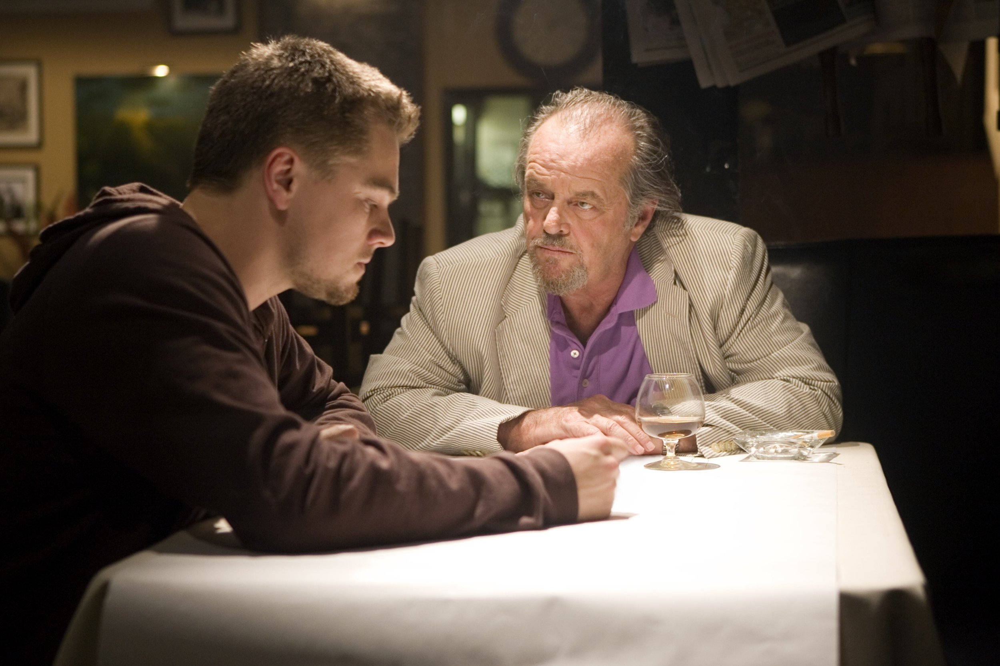
 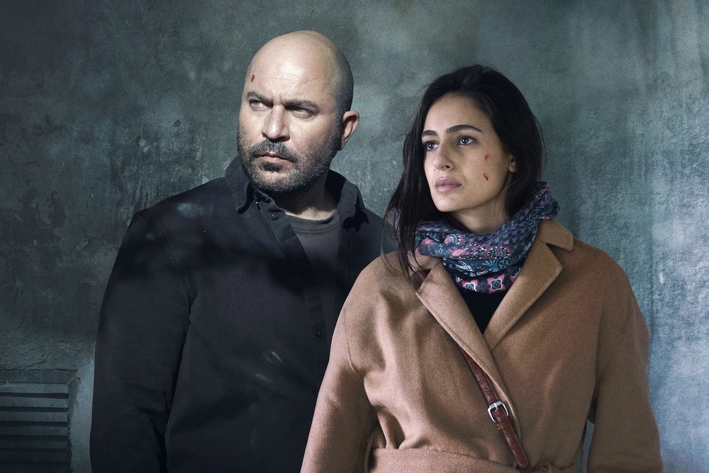
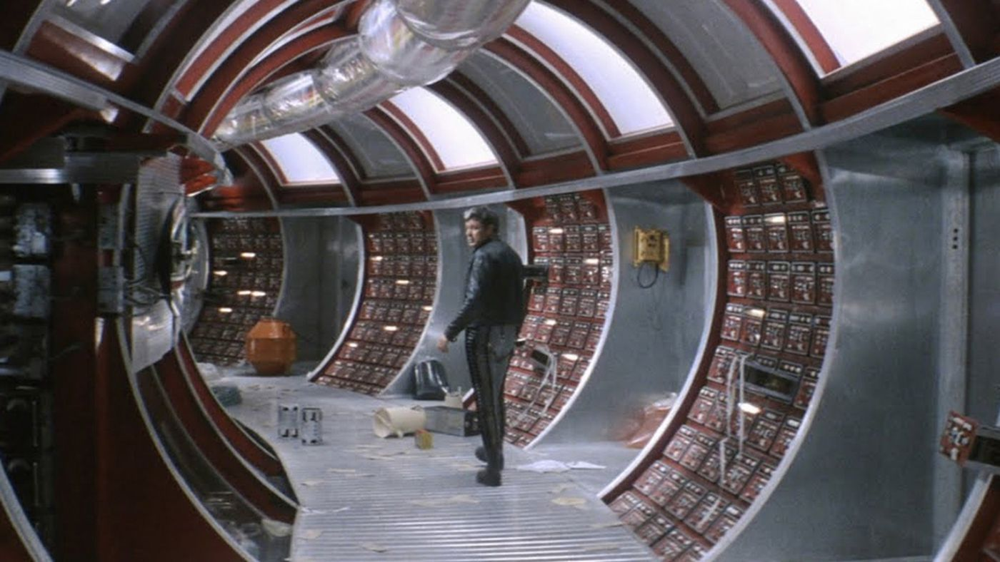
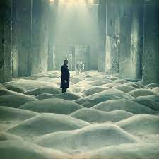
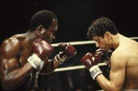
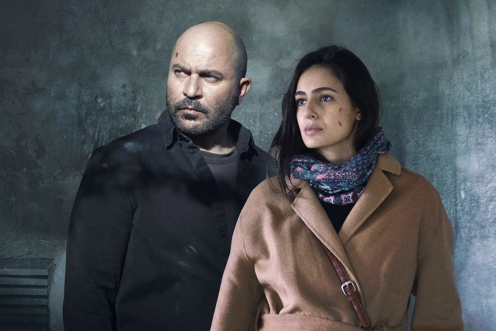
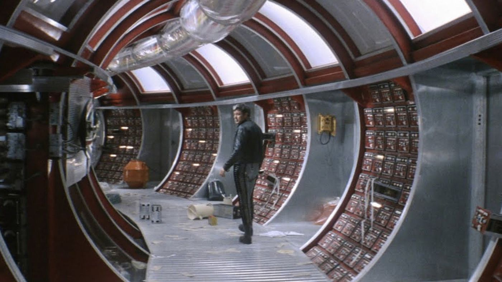
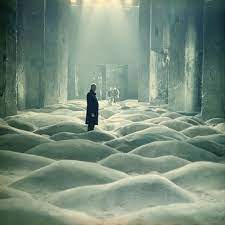
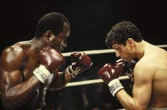
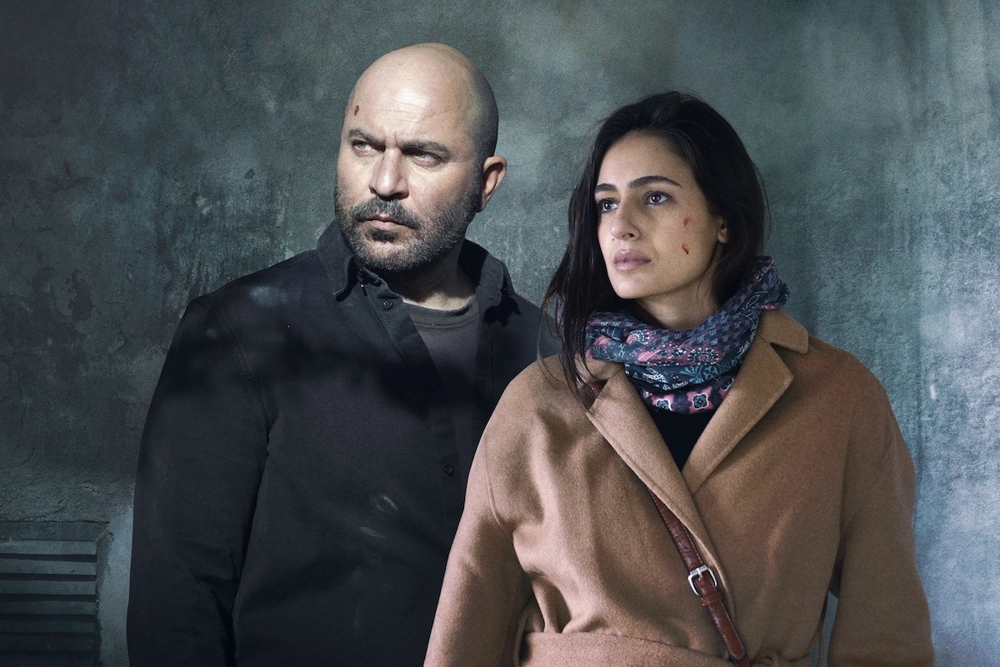
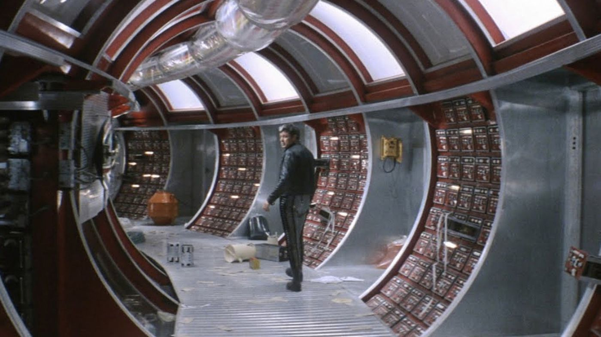
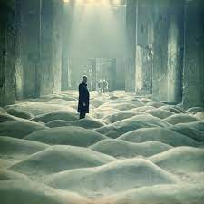
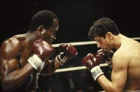